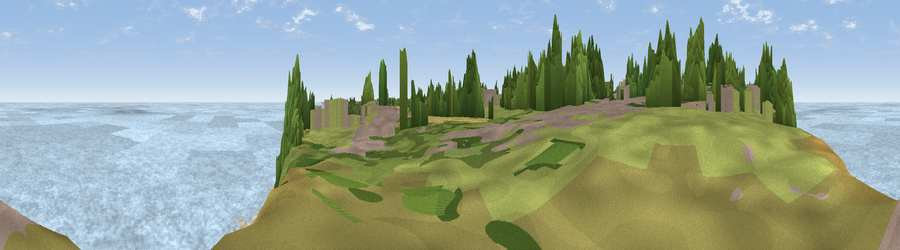

Viewpoint near Mundesley
#22391 in England · top 60% of its area beats it · near MundesleyWhere it is
The exact computed spot (TG 30925 37075). Click the marker for map links.
The view, rendered

A 360° render of this exact spot computed from the terrain model, tree cover and land cover — summer colours, afternoon light, calibrated against photographs of famous viewpoints. Real trees, hedges and buildings will differ in detail.
The panorama
Grey silhouette: terrain skyline in each direction (720 bearings, Earth curvature and refraction included). Dashed green: skyline with trees (+15 m) and buildings (+8 m) as obstacles. Blue strip: how far the ground is visible on each bearing.
Where the view opens
Wedge length = distance to the farthest visible ground on that bearing (vegetation-aware). Rings at 10, 25 and 50 km.
What fills the view
83% water · 7% bare ground · 4% grassland · 3% cropland · 2% woodland · 1% built-up
Angular shares of the visible panorama (visual magnitude), not map area. Landscape diversity 0.31 (0–1 Shannon).
Key numbers
More beautiful places nearby
The staircase of upgrades: each row has a higher view potential than everything closer. Driving times are estimates from straight-line distance, calibrated against real road routing — check an actual route before setting out.
| Place | Direction | Drive | Score |
|---|---|---|---|
| Viewpoint near Mundesley | SE · 1 km | ~3 min | 58.9 |
| Viewpoint near Trimingham | NW · 2 km | ~6 min | 62.4 |
| Viewpoint near Sidestrand | WNW · 6 km | ~12 min | 65.3 |
| Viewpoint near Overstrand | WNW · 8 km | ~17 min | 67.5 |
| Viewpoint near Weybourne | WNW · 21 km | ~36 min | 68.3 |
| Viewpoint near Claxby | WNW · 133 km | ~156 min | 71.5 |
| Viewpoint near Bempton | NW · 177 km | ~197 min | 72.8 |
| Viewpoint near Speeton | NW · 178 km | ~199 min | 74.4 |
52.88153, 1.43060 · source: screening · position refined by local search. Computed location — check access rights before visiting.